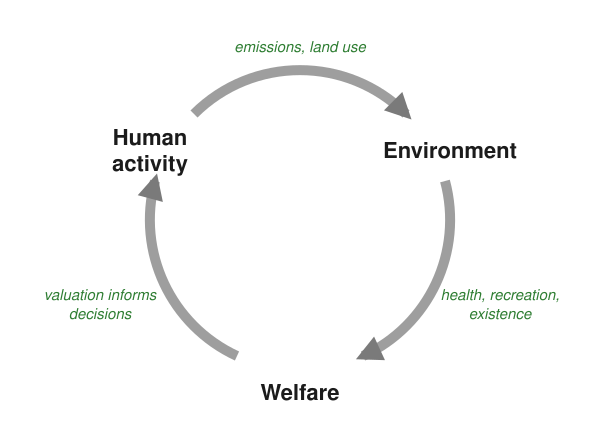
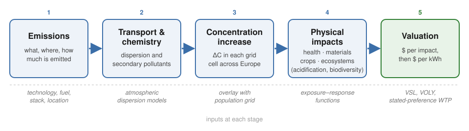
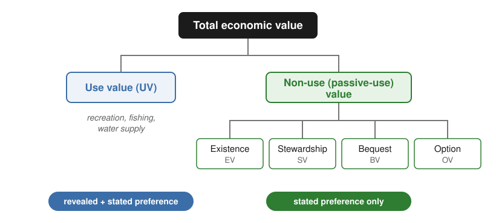
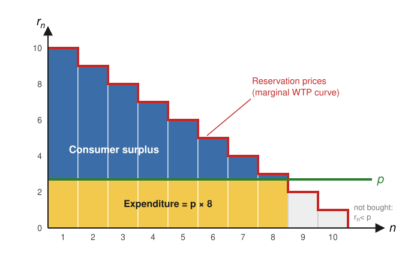
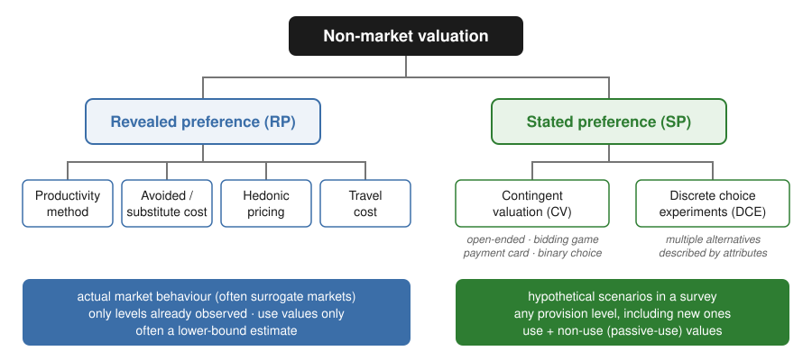

Lecture 12 - Non-Market Valuation
ENCI707: Engineering Demand and Policy Analysis
Outline
- Motivation for valuation
- Individuals’ motivation for willingness to pay (WTP)
- Economic theory
- Nonmarket valuation methods
- Short history of contingent valuation
Motivation for Valuation
Environmental Decision Making

Valuation supports rational decisions about the environment:
- Market inefficiencies
- Public goods → cost-benefit analysis
- External effects → Pigouvian taxes
- Assessing the economic desirability of policies
- Demonstrating the importance of an issue
- Priority setting
- Legal damage assessment
- Green national accounting
- Often the least controversial argument
Basic Cost-Benefit Analysis (CBA) Framework
A complete CBA should:
- Compare all costs and benefits
- Include environmental and health impacts
- Quantify environmental changes
- Value those changes monetarily
- Calculate net benefits
- Account for discounting
- Compare alternatives
Is Economic Valuation Important?
- Tens of thousands of papers and studies
- A major share of presentations at environmental economics conferences
- Standard material in environmental economics textbooks
- Used to assess very large policies, e.g., the U.S. Clean Water Act (U.S. EPA, 1994)
- …and a wide range of sectoral and regional policy decisions
Central to modern welfare economics: environment, health, transport, marketing, culture, …
Example: Electricity Generation
The Problem
- How “harmful” are different ways of generating electricity?
- Electricity production generates:
- Air pollution
- Greenhouse gases
- Health impacts
- Ecosystem damage
- These external effects are not included in the economic decisions of power plants
- Economic theory suggests:
- Taxing emissions according to marginal external damage
- Comparing technologies based on social costs: which sources should be promoted?
External Costs of Electricity
Major European research efforts (ExternE project series):
| Project | Years |
|---|---|
| ExternE-Pol | 2002–2004 |
| NEEDS | 2004–2008 |
| CASES | 2006–2008 |
| EXIOPOL | 2007–2011 |
Goal: estimate the average external cost of electricity generation
- Bottom-up approach
- Damages from each power plant depend on local conditions: technology, fuel, location, atmospheric conditions
Impact Pathway Approach

Damages are summed over all receptors, then expressed per unit of energy ($/kWh)
Types of Welfare Effects
- Health:
- Mortality
- Morbidity
- Environment:
- Biodiversity loss
- Acidification
- Eutrophication
- Economic:
- Agriculture
- Materials damage
Individuals’ Motivation for WTP
Economic Value
- Economic value = consumers’ aggregated willingness to pay
- Based on people’s preferences
- Anthropocentric!
- Motives are essentially irrelevant to the neoclassical economic theory of value
- Economists accept consumer sovereignty (i.e., people know what is best for themselves)
- That does not mean motives are irrelevant altogether…
Total Economic Value (TEV)
\[ TEV = \underbrace{UV}_{\text{use}} + \underbrace{EV + SV + BV + OV + \cdots}_{\text{non-use (passive use)}} \]

Use and Non-Use Values
Use Value
- Benefits obtained from direct or indirect use
- Examples:
- Recreation
- Fishing
- Water consumption
Non-Use Value
- Benefits independent of actual use
- Examples:
- Knowing a species exists
- Preserving resources for future generations
Existence Value
- Utility gained simply from knowing that an environmental resource exists
“[…] satisfaction from the mere knowledge that part of the wilderness […] remains, even though they would be appalled by the prospect of being exposed to it.”
- Examples:
- Endangered species protection
- Wilderness preservation
Stewardship Value
- Value derived from acting as a responsible caretaker
- The government should be a “good steward” of an environmental resource
- A duty to protect some entity from harm imposed by human activity
- Examples:
- Maintaining water quality
- Preserving habitats or setting aside land rather than developing it
- Preventing human-caused (not natural) species losses
Bequest and Option Values
Bequest Value
- Protecting resources for children, grandchildren and future generations
Option Value
- Protecting a good from destruction or irreversible damage to keep the option of using it in the future
- Important when:
- Future preferences are uncertain
- Environmental damage may be irreversible
Motivations
- Motives are irrelevant to economic value, but understanding them helps us interpret and use results
Altruism
- Concern for others’ welfare
- Not an illegitimate source of value
- No problem if it is altruism towards animals or plants
- May cause double counting if respondents do not realize that others will pay too
Warm Glow
- Utility from doing something that makes you feel good
- Charitable giving
- Environmental donations, especially voluntary contributions
Economic Theory
WTP Curve vs. Demand Curve
- WTP curve is close to the demand curve, but they are not the same:
- The WTP curve reflects WTP for subsequent units
- The demand curve reflects WTP for \(x\) units (at once)
- Differences arise from income effects
- In practice, the WTP curve is difficult to estimate:
- The demand curve is used as an approximation
- With the demand curve we measure consumer surplus
Consumer Surplus

Each unit is bought while its reservation price \(r_n \ge p\); consumer surplus is \(\sum_{n:\, r_n \ge p} (r_n - p)\).
Beyond Consumer Surplus
- Consumer surplus is an approximation: it ignores income effects
- When income effects are present:
- Marginal utility of income is decreasing
- The richer we are, the less we care about money
- We need more money for the same utility increase
- What is the true welfare-change measure?
Compensating Variation (CV)
- Income change that restores the original utility level after the change (measured ex post)
Equivalent Variation (EV)
- Income change that gives the utility level reached after the change, applied before it (measured ex ante)
Property Rights Matter
- Two key measures:
- WTP (Willingness to Pay)
- WTA (Willingness to Accept)
- Which one applies depends on:
- The initial entitlement
- Property rights
- Example: Imagine a community located along a river.
- If residents are considered to have a property right to clean water, a polluter must compensate them for degradation. The relevant measure is WTA.
- If the river is already polluted and residents seek restoration, the relevant measure is WTP for improvement.
Summary: Price Is Not Value
- WTP / WTA = welfare-change measure
- WTP or WTA? Depends on property rights
- Market goods: use the demand curve to calculate CS
- Non-market goods (public goods, environmental goods): no demand curve to observe
- Examples: biodiversity, water quality, recreation sites, ecosystem services
- Non-market valuation methods
Valuation Approaches
Two Major Families

Revealed vs. Stated Preference
Revealed Preference (RP)
- People’s choices are observed in actual market situations
- Can use indirect evidence from surrogate markets
Stated Preference (SP)
- Choices are observed in hypothetical situations
- Usually in a survey
- Trade-offs between the two:
- Scope of values that can be observed
- Flexibility
- Reliability
Revealed Preference Methods
Productivity Method
Environmental inputs used in production, e.g., water used to produce juice
Avoided Damage / Substitute Cost Method
Value inferred from prevented losses, e.g., valuing flood protection
Hedonic Pricing
Property or wage markets
Travel Cost Method
Recreation demand and site valuation
Limitations of RP Methods
- Suitable markets often do not exist
- Only levels observed in markets can be valued
- Little ability to estimate passive-use values
They often produce lower-bound estimates
Stated Preference Methods
Consumers’ choices are contingent on scenarios posed in a survey → contingent valuation (CV)
Many ways to elicit preference information in a CV study:
- “What is your maximum willingness to pay for …?”
- Discrete choice experiments (DCE)
SP methods can examine provision levels that differ substantially from anything observed now or in the past
SP is the only approach that can capture the passive-use component of economic value
Short History of Contingent Valuation
Early Development
- Davis (1963): first academic CV study, using surveys to value a wilderness area to hunters and tourists
- Knetsch and Davis (1966), Resources for the Future: compared CV with the travel cost method (suggested earlier by Hotelling)
- Early studies focused on goods with a high passive-use component (species protection, wilderness areas)
- Randall, Ives and Eastman (1974): visibility changes from air pollution in the southwestern U.S.
- Water Resources Council (1979): Principles and Standards for Water and Related Land Resources Planning lists CV as one of three acceptable methods for evaluating federal projects
- U.S. EPA: major research programme developing CV (1970s–1980s)
Early Elicitation Formats
After describing the good and the scenario for providing it, WTP is elicited
Bidding Game
- Start from an initial amount and ask whether the respondent would pay it
- Yes → increase the amount; no → decrease it
- Continue until the answer changes
Open-Ended Questions
Direct question: “What is your maximum WTP?”
Payment Cards
- An array of amounts on a card
- Respondents pick the amount that best represents their WTP
Problems with Early Methods
- Starting-point bias
- Nonresponse
- WTP/WTA disparity
- Need for incentive compatibility: a single binary discrete choice question
- Different bids randomly assigned to respondents
- Mirrors choice behaviour in markets with posted prices
- Hypothetical bias
- Validity of some studies’ results
The Exxon Valdez Turning Point
- March 1989 oil spill in Prince William Sound, Alaska: spectacular in scale, but no one directly suffered market losses
- Environmental organizations sued Exxon
- Estimated environmental damages: $3–15 billion
- CV study for the damage assessment (Carson et al., 1992)
- Exxon sponsored symposia highlighting problems with CV (Hausman, 1993)
- The U.S. government convened a panel co-chaired by Nobel laureates Kenneth Arrow and Robert Solow to assess CV for measuring passive-use values (Arrow et al., 1993)
“CVM studies can produce estimates reliable enough to be the starting point of a judicial or administrative determination of natural resource damages, including lost passive values.”
NOAA Arrow–Solow Panel Recommendations
- Use credible scenarios
- Use a single binary discrete choice question
- Frame it as a vote (referendum)
- Consequences:
- Arrow et al. (1993) became the standard reference for years
- The number of CV studies grew exponentially
- To extract more information, payment cards and other formats were still developed and used
- Multiple choice sets or multinomial choice questions
- e.g., double-bounded binary (dichotomous) choice
Emergence of Choice Experiments
Adamowicz, Louviere & Williams (1994)
- Presented choice situations in tables
- Collected data on 16 choice sets with 3 alternatives each
- Called it a “choice experiment”
Hanley, Wright & Adamowicz (1998)
- Summarized the fast-growing number of DCE studies
- Explicitly valued programme attributes
Example Choice Card
Adapted from Adamowicz, Louviere & Williams (1994): “Suppose last August you could have chosen only from the recreational opportunities below.”
| A. Standing water | B. Running water | C. Non-water | |
|---|---|---|---|
| Water feature | Natural lake | Stream | Any other non-water recreation, or stay at home |
| Terrain | Mountain | Foothills | |
| Driving distance | 50 km | 50 km | |
| Fish types | Pickerel, pike & perch | Rainbow trout & whitefish | |
| Fish size | Large | Large | |
| Fishing success | 1 fish / 35 min | 1 fish / 4 hours | |
| Camping | Designated campsite | Designated campsite | |
| Water quality | Good | Good | |
| Boating / swimming / beach | None / Yes / No | None / No / Yes | |
| Day-use fee | None | $6 |
Which would you most likely have chosen? ☐ A ☐ B ☐ C
Summary
- Economic valuation supports environmental decision making
- Value is based on welfare and preferences; price is not value
- Total economic value includes use and non-use components
- Many environmental goods lack market prices
- RP and SP methods are complementary; only SP captures passive-use value
- After Exxon Valdez and the NOAA panel, DCEs emerged as a powerful stated-preference format